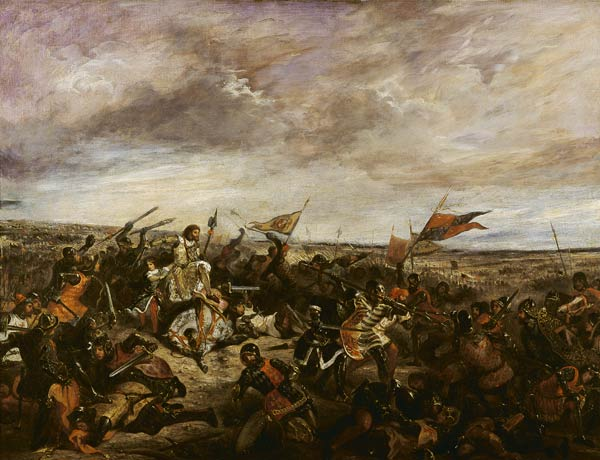

A Batalha de Poitiers
A Batalha de Poitiers ocorrida em 732 ficou conhecida como um dos mais célebres conflitos que envolveram muçulmanos e cristãos. E isto pelo fato da batalha ter sido apresentada como a ação militar que conseguiu deter as tropas islâmicas de adentrarem ainda mais o continente europeu, após a rápida tomada da Península Ibérica.
A partir do Emirado de Córdoba, constituído após 711, as tropas islâmicas se expandiram por essa região europeia, conquistando terras, além de saquear e pilhar várias localidades pelas quais as tropas passavam. A força das tropas islâmicas residia no fato de ser formada principalmente por cavalaria, uma forma de organização bélica não muito utilizada pelas tropas europeias.
Os conflitos entre muçulmanos e francos haviam se intensificado em 722, quando as tropas comandadas pelo duque Eudes da Aquitânia conseguiram conter os islâmicos em Toulouse, após terem atravessado os Pirineus. Dez anos depois, a ameaça se fazia novamente presente, com a diferença de que o duque Eudes se sentia incapaz de enfrentar novamente a cavalaria dos mouros. A saída foi pedir auxílio militar a seu rival, Carlos, rei dos francos.
Comandados por Abd al-Rahman, emir de Córdoba, os islâmicos haviam já conquistado Avignon, Viviers, Valence, Vienne, Lyon e Bourdeaux, quando o exército liderado por Carlos se colocou em um sítio localizado entre Poitiers e Tours. Porém, o exército europeu era composto predominantemente pela infantaria, lutando em terra, em uma formação muito próxima à adotada pelos exércitos macedônios e romanos. A cavalaria utilizada pelos muçulmanos os havia colocado em vantagem anteriormente, o que acabou não ocorrendo na Batalha de Poitiers.
Falanges formadas pelo exército de Carlos, dispostas em forma de quadrados e dotadas de escudos, machados, punhais e lanças, postaram-se em uma colina à espera do ataque das tropas de Abd al-Rahman. Durante dois ou sete dias (informações que diferem de acordo com a fonte, cristã ou islâmica), as tropas se enfrentaram em sangrentas batalhas, que foram vencidas pelos cristãos. A Batalha de Poitiers foi um dos raros conflitos em que uma infantaria venceu a cavalaria.
O golpe final dado pelos cristãos se deu depois que invadiram o acampamento dos muçulmanos e saquearam os tesouros que haviam pilhado durante as invasões às várias cidades francesas. A notícia de ataque ao acampamento levou à retirada de muitos cavaleiros islâmicos para salvar o seu butim. Na desorganização das tropas, Abd al-Rahman acabou se aproximando das linhas de defesa montadas por Carlos, sendo morto pela lança de um combatente. No dia seguinte, sem seu comandante e possivelmente sem parte dos tesouros pilhados, os muçulmanos recuaram, abandonando o local de batalha.
Carlos recebeu, após a batalha, a alcunha de Martel, significando “aquele que golpeia com um martelo”. Outra consequência da Batalha de Poitiers foi a expansão do império franco por Carlos Martel, conquistando a região dominada pelo duque da Aquitânia.
A Batalha de Poitiers ficou relegada à história como o momento de contenção da invasão islâmica na Europa, que colocava em risco a civilização cristã, que ainda não havia alcançado seu auge. Entretanto, novas incursões islâmicas ocorreram após este período, indicando que a construção dessa imagem de contenção da invasão pode ter sido feita com o objetivo de enaltecer as conquistas francas e contribuir com alguns elementos para a formação do nacionalismo francês.